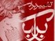

پذيرش > كوچه به كوچه > جشن آزادی عشا
 جمع آوری امضا به صورت گروهی جمع آوری امضا به صورت گروهی

 جشن آزادی عشا جشن آزادی عشا
4 آذر 1387 - امیر رشیدی - جمشید آیین دار - سیاوش خدایی - مریم زندی - نسخه قابل چاپ
امیر رشیدی
روز جمعه به همراه هفت نفر از دوستان عزیز کمپینی به مقصد یکی از کوه های اطراف تهران راهی شدیم تا هم ورزش کنیم و هم جشنی از جنس جشنهای کمپینی برای آزادی عشا عزیز برگزار کنیم. جشنی کمپینی که کیک اون بیانیه های کمپین بود شمع های فروزان اون هم امضاهای مردم. کیکی بس شیرین، شیرینی از جنس برابری که کام مردم را هم شیرین می کرد و هر کسی از راه می رسید شمعی بر روی این کیک روشن می کرد.
من به همراه مریم عزیز به سمت دو دختر جوان و مردی میان سال رفتیم. به نظر می رسید که مرد پدر اون دختر ها باشه. برای اونها از کمپین گفتیم و با اونها چند قدمی جلو رفتیم. دختر بزرگتر خیلی علاقه مند بود، قصد امضا هم داشت ولی مرد میان سال در حالی که ترس رو تو چشماش می دیدم مانع از امضا اونها شد. به اونها دفترچه رو دادیم و سایت کمپین رو معرفی کردیم. شک ندارم که اون دختر حتما سری به سایت ما میزنه و امیدوارم به ما بپیونده.
من و مریم عزیز به راهمون در حالی ادامه دادیم که بچه های دیگه هم داشتند با مردم صحبت می کردند و مشغول امضا گرفتن بودند. چند قدم که جلوتر رفتیم به میزی رسیدیم که دو خانم پا به سن گذاشته به همراه مردی هم سن و سال خودشون نشسته بودند. جلو رفتیم و خودمون رو معرفی کردیم. تا گفتم اعضای کمپین یک میلیون امضا برای تغییر قوانین تبعیض آمیز هستیم فوری گفت:
 آره، تو ماهواره دیگه؟ آره، تو ماهواره دیگه؟
من که از گفته اونها متعجب شدم، گفتم اونها خبرنگار هستند و مثل بقیه خبرها و اتفاقات، خبر فعالیتهای ما رو هم اعلام می کنند اما ما هیچ وابستگی به اونها نداریم. من بعد از این جمله کمی سکوت کردم و مریم عزیز مشغول توضیح دادن برای اونها شد. تو اون سکوت چند لحظه ای به این موضوع فکر می کردم که چرا ما به وسیله ماهواره بایدشناخته شده باشیم؟ چه میشه کرد وقتی رسانه ای عمومی در کار نباشه این اتفاق هم رخ میده. مریم از کمیته های مختلف می گفت و مرتب پز ما جونها رو می داد و از فعالیت ها مون براشون می گفت. من هم قوانین رو شرح دادم، اونها هم سه شمع به کیک جشن ما اضافه کردند.
تو راه برگشت حدس بزنید چه اتفاقی افتاد؟ تو یه لحظه مریم جون صدا کرد: "پرستو".
آره ما اونجا پرستو الله یاری رو دیدم که به همراه دوستانش برای تفریح آمده بودند. همگی از اینکه بعد از اون اتفاق تلخ پرستو رو شاد و سرحال دیدیم خوش حال شدیم.
سیاوش خدایی
آقا با کمپین یک میلیون امضا آشنا هستید؟
نه نمی خوام هم آشنا بشم!
مرسی. مزاحتمون نمی شم.
حالا که مزاحم شدی بگو ببینیم چیه اینی که گفتی!
10 ماده قانون هست که بهش اعتراض داریم. داریم از شهروندان امضا جمع می کنیم که به سهم خودمون تلاش کنیم قوانین تغییر کنن. اگر وقت دارید بهتون توضیح بدم.
مثلا چی؟
مثلاً سن مسوولیت کیفری این دختر کوچیکتون به 18 سال افزایش پیدا کنه.
مگه الان چند ساله سن همینی که گفتی؟
9 سال. یعنی تو 9 سال همون حکمی رو براش صادر می کنن که برای یه فرد بالغ.
نه آقا چرا خالی می بندی.
این دفترچه باشه خدمتتون توضیحات کامل توش هست. می تونید به بندهایی که توش اشاره شده مراجعه کنید.
اینم به نوعشه! همین که تا همین حد فکرش مشغول شد کافیه. مشغول شدن فکر، نیاز امروز ما است. چیزی که همیشه از ما دریغ کردند!
جمشید آیین دار
مردی جوان :
ببینم شما همون یک میلیون امضایید؟
آره جناب ما عضو کمپین یک میلیون امضا برای تغییر قوانین تبعیض آمیز هستیم .
بله من در موردش می دونم، بدید من امضا کنم. (خوشحالم که سئوال پیچم نکرد)
یک خانم جا افتاده و دنیا دیده :
آقا شما ها که مشکلی ندارید، قوانین زنان چه ربطی به شما داره ؟
بگو ببینم، ازدواج کردی؟
نه مادر. هنوز امکانش فراهم نشده.
خوب همونه اگه زن می گرفتی، حالا الان نمی اومدی برای حقوق زنا امضا بگیری.
آخه مادر، این قوانینی که ما در صدد هستیم که تغییر کنه به ضرر ما مردا هم هست مثل .....
باشه من که ازم گذشته بده امضا کنم، من بازنشسته فرهنگم، آقا اون دوره چقدر خوب بود ...
دو تا آقای مسن:
ببین شما الان جوونید، من سنی ازم گذشته، هر چی که به فکرتون میاد رو که نباید به زبون بیارید.
ما شاهنشاه می خوایم، هر چی مسئله تو این مملکته از این جمهوریه، شما سعی کنین اول اینو درست کنین ( با خودم میگم همون مجلس شورای ملی شاهنشاهی بود که توی کار لایحه مهر انگیز منوچهریان سنگ انداخت، تو اون موقع کجا بودی آقای محترم )
گروه بعدی(سه دختر با یه پسر) :
یه نفر از شما رو گرفته بودن ؟ عشا .......
آره عشا مومنی که چند روز پیش آزاد شد . ( توی ذهنم حرفای بابای عشا مرور میشه و به این فکر می کنم چقدر فضا نسبت به پارسال تغییر کرده، مردم خیلی خوب وقایع رو دنبال می کنن، اون موقع باید به همه توضیح می دادیم کمپین چیه، به یمن این همه دستگیری حالا دیگه همه کمپین رو می شناسن )
گرم توضیح می شویم و خلاصه برگه امضا و آدرس سایت و ...
مریم جان : ببینید خانمها ما با هم، با این پسرها برای تغییر قوانین تبعیض آمیز ضد حقوق زنان داریم امضا جمع می کنیم ...
خانم من تا این برگه رو مطالعه نکنم که نمیشه امضا جمع کنم ....
مریم جان به صحبتهاش ادامه میده ... و من دور شدم و می بینم بالاخره امضا رو می گیره، وجیهه و نگار تلاش می کنن با دادن دفترچه و توضیحات کاملتر از چند کوه نورد امضا بگیرن.
زینب و سیاوش از اون نماینده مجلس میگن که باهاش گفتگو کردن...
یه خانمی می گفت که توی بانک محل کارش می خواسته یه چیزی به نام شورای زنان با همکاری کارمندان زن تشکیل بده که به مشکل می خوره و خلاصه این که بعد از گفتگو با مریم جان پرسید که خدیجه مقدم و آسیه امینی هم با شما هستن؟ و من به این فکر می کنم که بعد از دو سال خیلی پتانسیل های مفیدی تو جامعه داریم که نتونستیم جذب کنیم .
من و نگار با دو تا خانم وارد گفتگو می شیم...
آقا این آقای لاریجانی خیلی آدم خوبیه ولی نمی ذارن کار کنه. ( من نمی دونم به کمپین چه ربطی داره )
هر چه از قوانین می گیم ، یه جورایی همه رو رد می کنن و میگن نه بابا این حرفا درست نیست، آخرش با چه مصیبتی امضا می کنن و می گن که حتما شما با مطالعه دارین حرف می زنین.
مریم زندی
غروب سردی بود، ولی دل هامان گرم. همدیگر را که دیدیم با شعف و شوقی به راه افتادیم، گفتگو با مردم سرمای دل هایمان را گرمای بیشتری بخشید. با آن ها قدم برمی داشتیم حرف می زدیم پابه پاشان بودیم و گفتگو می کردیم و امضا می گرفتیم .
گفتگوی جمعی ما، خنده ونشاط دختران و پسران جوان، حتی دیگران را هم به وجد می آورد. وقتی می ایستادیم، هر کس بخشی از قوانین تبعیض آمیز را می گفت، شنونده کنجکاو می شد که چه می خواهند این مردان و زنان جوان، چه می گویند که این همه شتاب دارند و به وجد آمده اند .
امیر از حق طلاق زن می گفت. سیاوش از حق سرپرستی زنان. جمشید از قانون ارث می گفت. وجیهه دفترچه توزیع می کرد و زینب و نگار برگه های امضا را رو می کردند .
باید می بودید و می دید چه نشاطی بود. مگر می شد گوش شنوایی داشته باشی و توضیحات این جوانان را بشنوی و نیاوری به تغییر قوانین! مگر می شود با آنان همراهی نکرد.
اگر چه هوا سوزی سرد به همراه داشت ولی عطش مخاطبین ما به دانستن، آشنا شدن و مسرور از ملاقات با عده ای کمپینی ما را هم به وجد آورده بود.
جملگی، مرد و زن با آهی و حسرتی امید و آررزوی موفقیت برایمان داشتند.
بی این که سرمای شامگاهی پاییز را حس کنیم راهی خانه ها شدیم.
ارسال به
بالاترین
،
توییتر
،
فریندفید
،
فیسبوک
در همين بخش :
 روايت بيست و پنجمين شهريور / نرگس طیبات روايت بيست و پنجمين شهريور / نرگس طیبات
وقتی آتش خاموش شود/فرشته نوبخت
آن گاه که زن شدم / ویژه نامه 8 مارس 1391
چیزی زیر پوست این شهر می جوشد / دلارام علی
گرسنگی / وبلاگ سیب و سرگشتگی
ديگر بخش ها :
طرح یک میلیون امضا
|
مقالات
|
سایت نوشته ها
|
اخبار
|
گزارش كمپين
|
گفت و گو
|
علیه سکوت
|
كوچه به كوچه
|
نامه های شما
|
گزارش ویژه
|
گفتگو با اعضا
|
ویژه سالگرد کمپین
|
تصویر برابری
|
دل آرام علی
|
تریبون
|
مقالات
|
تاریخ شفاهی
|
خارج از چارچوب
|
کتابخانه
|
درباره کمپین
|
کمپین در شهرها
|
کمپین در بند
|
صدای تغییر
|
ویژه 22 خرداد
|
لایحه حمایت از خانواده
|
گالری
|
عشا مومنی
|
امیر یعقوبعلی
|
خدیجه مقدم
|
راحله عسگری زاده و نسیم خسروی
|
پروین اردلان،جلوه جواهری، مریم حسین خواه، ناهید کشاورز
|
زینب پیغمبرزاده
|
سعیده امین، سارا ایمانیان، محبوبه حسین زاده، ناهید کشاورز و همایون نامی
|
احترام شادفر
|
نسیم سرابندی زاده،فاطمه دهدشتی
|
وبلاگ مهمان
|
پرونده خرم آباد
|
دستگیری ها
|
مریم مالک
|
پرستو اللهیاری
|
مهرنوش اعتمادی
|
سمیه رشیدی
|
Other Languages
|
همراهان
|
«فراخوان کمپین ده روز با بهاره هدایت»
| English
|